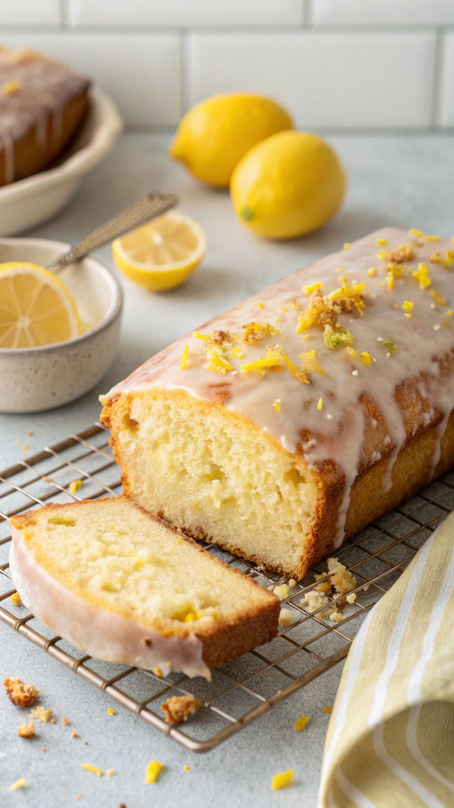

Lemon Drizzle Cake

Description
This lemon drizzle loaf is soft, moist, and bursting with fresh citrus flavour.
Finished with a sweet tangy glaze, it strikes the perfect balance between zesty and sweet.
Perfect for afternoon tea, dessert, or a light snack, this simple loaf cake is easy to make and guaranteed
to impress with its bright flavour and beautifully tender crumb.
Ingredients
- Salt
- Yogurt
- Oil
- Lemon
- Vanilla
- Butter
- Eggs
- Baking Powder
- Sugar
- Flour
- Icing Sugar
- Lemon Juice
Steps
- Preheat over to 180°C/350°F (160°C fan-forced).
- Whisk dry ingredients in a large bowl. Whisk wet ingredients in a separate bowl.
Pour wet ingredients into the dry ingredients. Whisk just until lump free.
Pour into the prepared loaf pan then smooth the surface.
- Bake 45 minutes uncovered. Loosely cover with foil then bake a further 20 minutes or until a skewer
inserted comes out. clean.
- Stand 10 min in pan then turn out onto a cooling rack. Fully cool before glazing.
Use a spoon to spread and coax lovely glaze drips down the side. Cut thick slices and serve.
Home